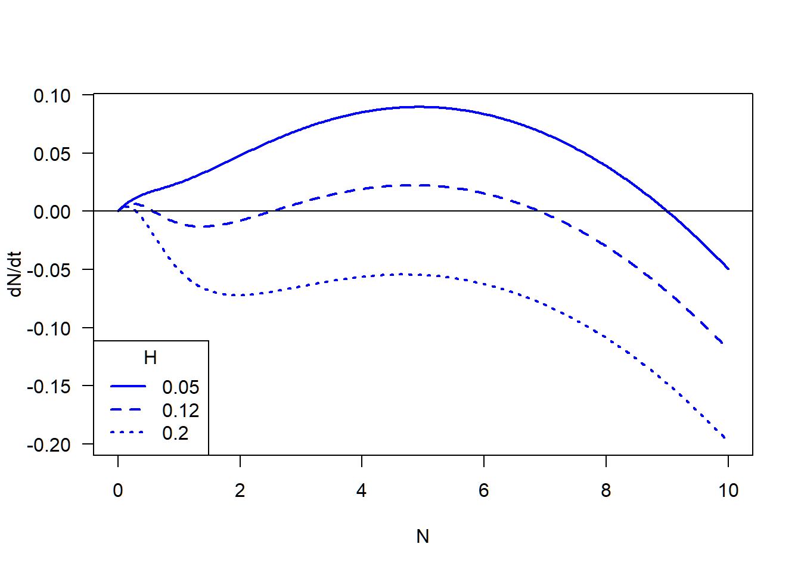
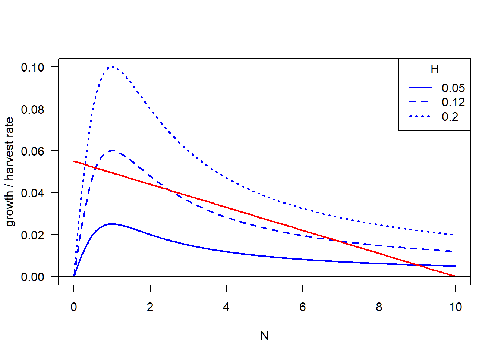

Week 7 - Age-structure population model
In this lab section, we will analyze a Leslie matrix using for loops and matrix algebra, compare the results with those obtained via eigen-analysis, and visualize the population dynamics and age distribution.
Part 1 - Visualizing stable age distribution
For any diagonalizable n-by-n matrix \(M\) with only one dominant eigenvalue, and for any n-by-1 vector \(v\), \(M^tv\) will shift to the same direction with the eigenvector of \(M\) corresponding to the dominant eigenvalue when \(t\) is large. Here, we visualize this fact numerically.
library(ggplot2)
Time = 6
A = matrix(c(1, 1, 0.5, 0), 2, 2, byrow=T)
N = matrix(0, Time, 2)
N[1, ] = c(1, 1)
for(i in 2:Time){
N[i, ] = A %*% N[i-1, ]
}
Data = as.data.frame(N)
Data$Time = rep(1:Time)
Data$V1.start = 0
Data$V2.start = 0
ggplot(Data, aes(x=V1, y=V2, col=as.factor(Time))) +
geom_point() +
geom_segment(aes(x=V1.start, y=V2.start, xend=V1, yend=V2),
arrow=arrow(type="closed", length=unit(0.4,"cm"))) +
geom_text(aes(x=V1+0.1, y=V2+0.1, label=Time)) +
scale_color_brewer("Time", type="qual", palette=2) +
labs(x="Age 1", y="Age 2") +
theme_classic()
Part 2 - Analyzing Leslie matrix
Consider an age-strutured population model \[ n_{t} = L^tn_0 \] where \(L\) is a Leslie matrix and \(n_t = (n_{1,t}, n_{2,t}, n_{3,t})\) is the population sizes with three different ages in time \(t\).
### Leslie matrix and initial age classes
leslie <- matrix(data = c(0, 1, 5,
0.5, 0, 0,
0, 0.3, 0),
nrow = 3,
ncol = 3,
byrow = T)
N0 <- c(10, 0, 0)
### for loop and matrix algebra
time <- 50
pop_size <- data.frame(Age1 = rep(0, time),
Age2 = rep(0, time),
Age3 = rep(0, time))
pop_size[1, ] <- N0
for (i in 2:time) {
# Matrix multiplication
pop_size[i, ] <- leslie %*% t(pop_size[i-1, ])
}
# Total abundance
pop_size$N <- rowSums(pop_size)
head(pop_size)## Age1 Age2 Age3 N
## 1 10.0 0.00 0.000 10.000
## 2 0.0 5.00 0.000 5.000
## 3 5.0 0.00 1.500 6.500
## 4 7.5 2.50 0.000 10.000
## 5 2.5 3.75 0.750 7.000
## 6 7.5 1.25 1.125 9.875plot(c(1,time), c(0,265), type = "n", xlab = "time", ylab = "pop_size")
lines(1:time , pop_size$Age1, col = "red")
lines(1:time , pop_size$Age2, col = "blue")
lines(1:time , pop_size$Age3, col = "green")
legend("topleft",
legend = c("Age1", "Age2", "Age3"),
col = c("red", "blue", "green"),
lty = 1)
Plot in log-scale:
matplot(x = 1:time, y = log(pop_size[, 1:4]), type = "l", lty = 1,
col = c("red", "green", "blue", "black"),
xlab = "Time", ylab = "log(population size)")
legend("bottomright", c("Age 1", "Age 2", "Age 3", "Total"), bty = "n",
lty = 1 , col = c("red", "green", "blue", "black"))By the derivation in the class, the asymptotic population sizes can be approximated by \[ n_t \approx c\cdot \lambda_1^t\cdot u_1 \] where \(c\) is a constant, \(\lambda_1\) is the dominant eigenvalue and \(u_1\) is the corresponding eigenvector. Hence, with the long-term dynamics, the population grows at a rate \(\lambda_1\) and with the age distribution \(u_1\). Here, we check this fact numerically.
### Asymptotic growth rate and stable age distribution
asymptotic_growth <- pop_size$N[time]/pop_size$N[time-1]
asymptotic_growth## [1] 1.089992## Age1 Age2 Age3
## 50 0.6309262 0.2894167 0.07965713## eigen() decomposition
## $values
## [1] 1.0899905+0.0000000i -0.5449953+0.6253475i -0.5449953-0.6253475i
##
## $vectors
## [,1] [,2] [,3]
## [1,] 0.9030054+0i -0.8418972+0.0000000i -0.8418972+0.0000000i
## [2,] 0.4142263+0i 0.3334136+0.3825709i 0.3334136-0.3825709i
## [3,] 0.1140082+0i 0.0250833-0.1818099i 0.0250833+0.1818099i## [1] 1.089991## [1] 0.63092527 0.28941777 0.07965696The asymptotic growth rate and stable age distribution obtained from for loops and eigen-analysis are similar.
Part 3 - In-class exercise: Analyzing population matrix of common teasel
Common teasel (Dipsacus sylvestris) is a herbaceous plant commonly found in abandoned fields and meadows in North America. It has a complex life cycle consisting of various stages. The seeds may lie dormant for one or two years. Seeds that germinate form small rosettes, which will gradually transit into medium and eventually large rosettes. These rosettes (all three sizes) may remain in the same stage for years before entering the next stage. After undergoing vernalization, large (and a few medium) rosettes will form stalks and flower in the upcoming summer, set seeds once, and die. Occasionally, the flowering plants will produce seeds that directly germinate into small/medium/large rosettes without entering dormancy.
Here is a transition diagram for the teasel. Please convert this diagram into a stage-based transition matrix (Lefkovitch matrix) and derive the asymptotic growth rate \(\lambda\) in R.

### Leslie matrix for Teasel
Teasel <- matrix(data = c(0, 0, 0, 0, 0, 322.38,
0.966, 0, 0, 0, 0, 0,
0.013, 0.010, 0.125, 0, 0, 3.448,
0.007, 0, 0.125, 0.238, 0, 30.17,
0.008, 0, 0, 0.245, 0.167, 0.862,
0, 0, 0, 0.023, 0.75, 0),
nrow = 6,
ncol = 6,
byrow = T)
### Use eigen() function
EIGEN <- eigen(Teasel)
### Dominant eigenvalue
abs(EIGEN$values[1])## [1] 2.32188## [1] 0.637 0.265 0.012 0.069 0.012 0.005Part 4 - COM(P)ADRE: A global database of population matrices
COM(P)ADRE is an online repository containing matrix population models on hundreds of plants, animals, algae, fungi, bacteria, and viruses around the world, as well as their associated metadata. Take a look at the website: You will be exploring the population dynamics of a species (of your choice) in your assignment!